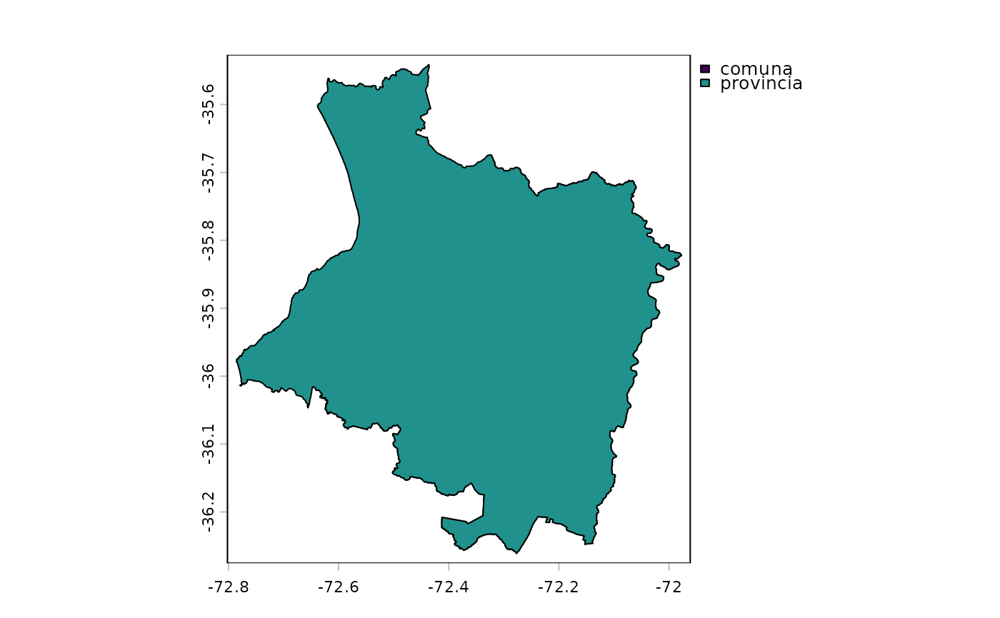

Official boundaries of the Cauquenes commune and province (Maule Region,
Chile) from the 2023 Political and Administrative Division of Chile
(DPA 2023), used by the Cauquenes case study and the examples of
worldclim_region().
Format
A PackedSpatVector with 2 polygons in SIRGAS-Chile 2002
(EPSG:5360, geographic coordinates) and 8 attributes:
- nivel
"comuna"(Cauquenes commune) or"provincia"(Cauquenes province).- CUT_REG, CUT_PROV, CUT_COM
Unique territorial codes of region (
"07"), province ("072") and commune ("07201";NAfor the province).- REGION, PROVINCIA, COMUNA
Names.
- SUPERFICIE
Area in km2 as published (2,124.54 for the commune, 3,021.67 for the province).
Source
Subsecretaría de Desarrollo Regional y Administrativo (SUBDERE),
Unidad de Investigación Territorial (2023). División Político
Administrativa 2023 (file DivisionPoliticoAdministrativa2023,
shapefile; commune and province layers), published 3 August 2023 through
IDE Chile. Contact: División de Políticas y Estudios, SUBDERE
(https://www.subdere.gov.cl). Extracted with data-raw/cauquenes.R.
Details
The object is a packed terra vector (see terra::wrap()). Use
cauquenes_boundary() to get one level as a ready-to-use SpatVector, or
vect(cauquenes) for both. Geometry and attributes are those of the
DPA 2023 layers, not simplified.
The DPA 2023 is the national layer of communes, provinces and regions produced by the DPA working group of IDE Chile (SUBDERE, IGM, DIFROL and INE) from the interior limits of SUBDERE (version 0702), the international limit of DIFROL (version 4) and the IGM coastline (version 3), at a representation scale of 1:50,000. Its reference system is SIRGAS-Chile 2002 in geographic coordinates (EPSG:5360).
SUPERFICIE is the official area published by SUBDERE, computed in
SIRGAS-Chile UTM coordinates and rounded to two decimals. Geodesic areas
computed with expanse() agree to within 0.1 %.
Circulation notice
Autorizada su circulación por Resolución Nº 87 del 2023 de la Dirección Nacional de Fronteras y Límites del Estado. The edition and circulation of maps that refer to the limits and borders of Chile do not commit the State of Chile in any way (DFL Nº 83 de 1979, art. 2, letra g). Maps derived from these boundaries that show international limits must be reviewed by DIFROL.
The boundaries are public information of the Government of Chile and are not covered by the MIT license of the package code.
Examples
cq <- vect(cauquenes)
cq
#> class : SpatVector
#> geometry : polygons
#> dimensions : 2, 8 (geometries, attributes)
#> extent : -72.78573, -71.9775, -36.26106, -35.54117 (xmin, xmax, ymin, ymax)
#> coord. ref. : lon/lat SIRGAS-Chile 2002 (EPSG:5360)
#> names : nivel CUT_REG CUT_PROV CUT_COM REGION PROVINCIA COMUNA SUPERFICIE
#> type : <chr> <chr> <chr> <chr> <chr> <chr> <chr> <num>
#> values : comuna 07 072 07201 Maule Cauquenes Cauquenes 2124.54
#> provincia 07 072 NA Maule Cauquenes NA 3021.67
plot(cq, "nivel")
